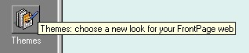
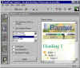
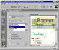
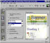
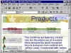
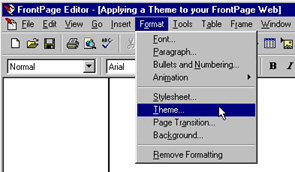

|
| ||
|
| ||
New to FrontPage 98 are over 50 professionally designed FrontPage Themes (or graphical designs) that give your site professionally designed and consistent page backgrounds, bullets, banners, hyperlinks and navigation bars.
Open a FrontPage Web in the FrontPage Explorer and select Themes from the Views Bar.

The Themes View gives you a preview of how the different page elements in your Web will appear after you apply a given Theme.

Click image to enlargeOnce you have selected a Theme, you may fine tune it by checking the box to add vivid colors, active graphics and a background image.
Active Graphics

Click image to enlargeVivid Colors

Click image to enlargeOnce you have selected the combination of colors, graphics and backgrounds that look right to you, you may apply the Theme to your Web by clicking on the Apply button at the bottom of the Themes View. Once the Theme is applied across your site, all the pages in your Web automatically will have a consistent appearance--just as if you had hired a graphics designer to design your Web site.

Click image to enlargeIf you only want to apply a Theme to a single page, open the page in FrontPage Editor and select Theme from the Format menu.

Did you find this material useful? Gripes? Compliments? Suggestions for other articles? Write us!
© 1999 Microsoft Corporation. All rights reserved. Terms of use.